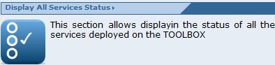
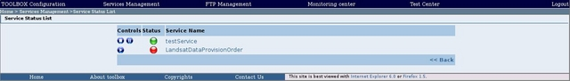

To view the current status of the toolbox services click on the "Display All Services Status" section link in the Service Management page

The browser should display a page listing all the services installed on the TOOLBOX and their status.
List of status:

Also, in this page, It is possible to Start/to Suspend /to Stop every service.
Operation Buttons:
| Starting Service, see Starting a Service section |
| Suspending Service, see Suspending a Service section |
| Stopping Service, see Stopping a Service section |
For each operations the browser will show a confirmation message.